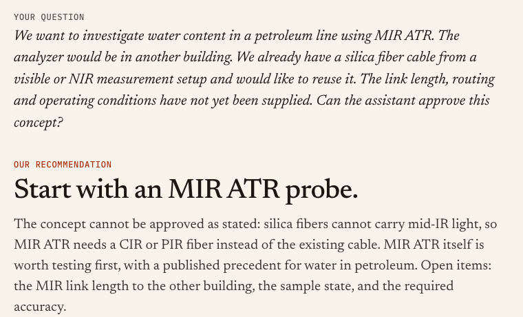
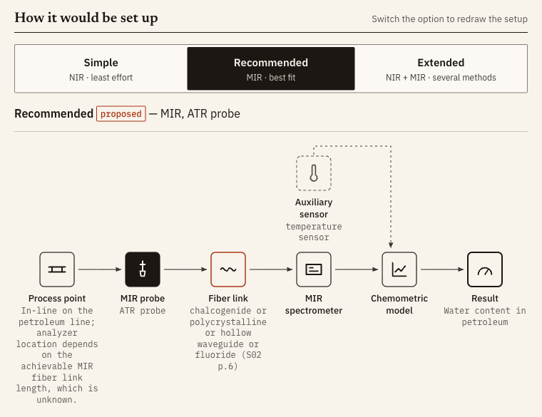
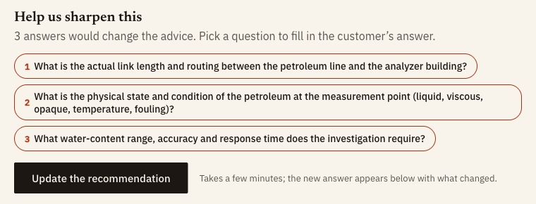
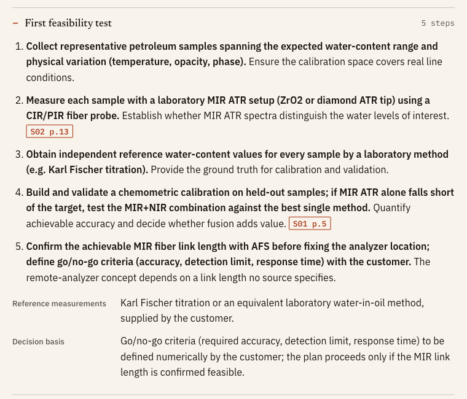

Art Fiber Systems challenge · SchubKI National AI Hackathon 2026
AFS Spectroscopy Assistant
A customer enquiry goes in. A cited first technical assessment comes out.
Team Helios
Rakibuzzaman Rahat, Md Mahmud Siddique
github.com/sleipnir029/Afs-Spectroscopy-Assistant
What we built
Ask in plain words.
Get a cited answer.
Recommends the method and probe to test first.
Every key claim cites the AFS page it comes from.
Asks only the questions that would change the advice.
Follow-ups in seconds; new facts update the answer.

Screenshot: the real app, evaluation case H04 (outputs/final/H04.json), unedited2 / 8
System architecture
Models write. Code checks.
Model
Read the enquiry
Gemini 3.5 Flash-Lite
→
→
Model
Write the answer
GLM-5.3-Flash
→
→
Model
Fix what failed
Gemini 3.8 Flash
→
Three models, each on its own job. In a blind test of 7 setups, this mix was 3–6× faster at close to the best quality, about $0.03 per case.
config/models.yaml · outputs/bakeoff-dev/blind/summary.md · ARCHITECTURE.md3 / 8
Use of AFS materials
Built on the AFS documents
67
AFS pages the model reads
44
rules from the AFS documents, each tied to a quote
120/120
quotes found word for word on the cited page, in the six evaluation cases
Code checks every quote against its page. Anything unsupported is removed or labelled.
afs-assist kb check · knowledge/rules.yaml · outputs/final/H0*.json (six evaluation cases)4 / 8
Example recommendation · evaluation case H04, unedited
“Can we reuse our silica cable for mid-IR?”
The agent’s answerNot as asked: silica fibers cannot carry mid-IR light. Test MIR ATR with a CIR or PIR fiber.

Screenshot: the real app, outputs/final/H04.json5 / 8
Example feasibility-study plan · same case, unedited
It asks, then plans the first test
Questions for the customer

First feasibility test

Screenshots: the real app, outputs/final/H04.json6 / 8
Results
Six evaluation cases, answered by the agent
Reuse an NIR calibration on a new blend?
Not supported. Rebuild the calibration.
A clear and an opaque dairy stream?
Provisional. A different NIR probe for each.
Fluorescence for glucose?
Not supported. Test Raman first.
Silica cable for mid-IR?
Not supported. Use a CIR or PIR fiber.
Unknown contaminant, sensor now?
Not enough information. Lab trial first.
A kidney study as proof for surgery?
Not supported. Test on own tissue first.
120/120quotes verified1.5–3min per case$0.29for all six
outputs/final/H01–H06 (.md, .json, brief/) · run once, not edited7 / 8
Limitations
Limitations and next steps
Full answers are long (~3,000 words)→A short customer reply
A quote on the page is not yet proof→A second checker for support
Confidence is mostly “Low”→Confidence that tracks the facts
A run takes 1.5–3 minutes→A faster fixing step
Code, answers and demo video (3:27): github.com/sleipnir029/Afs-Spectroscopy-Assistant · Team Helios
outputs/final/H0*.md, H0*.json · README.md “Known limitations”8 / 8